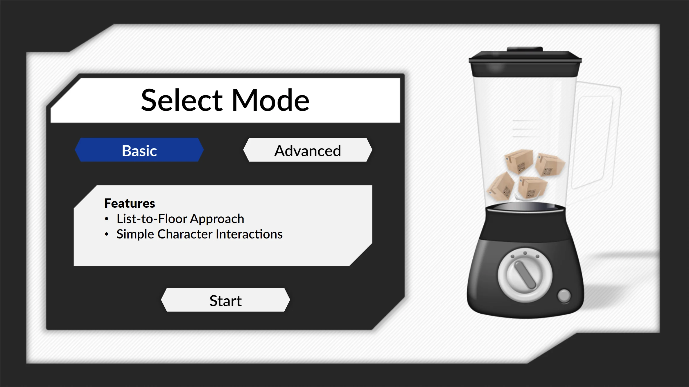
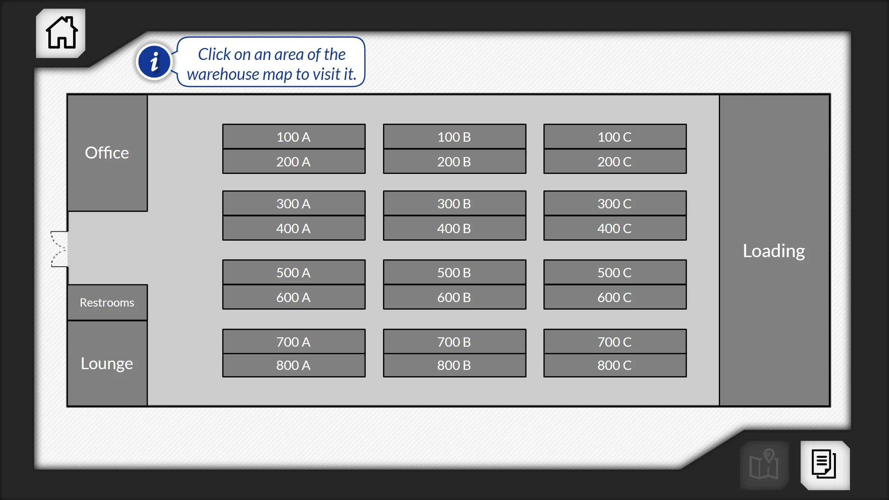
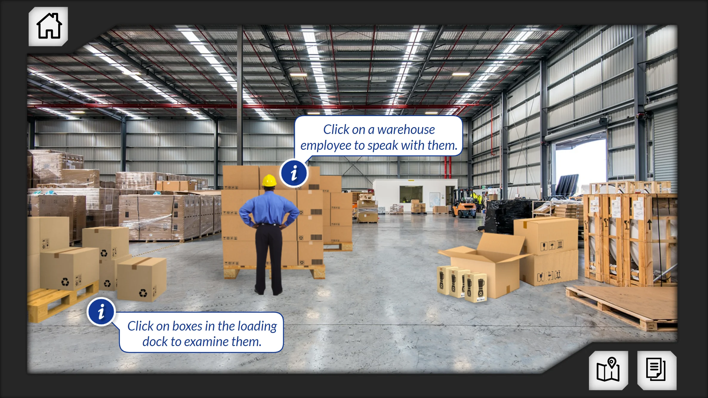
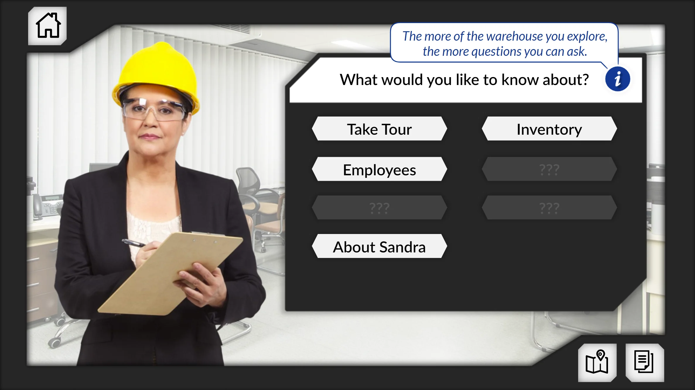
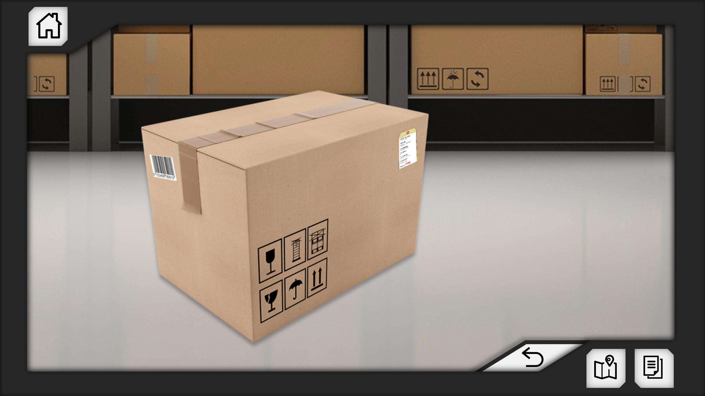
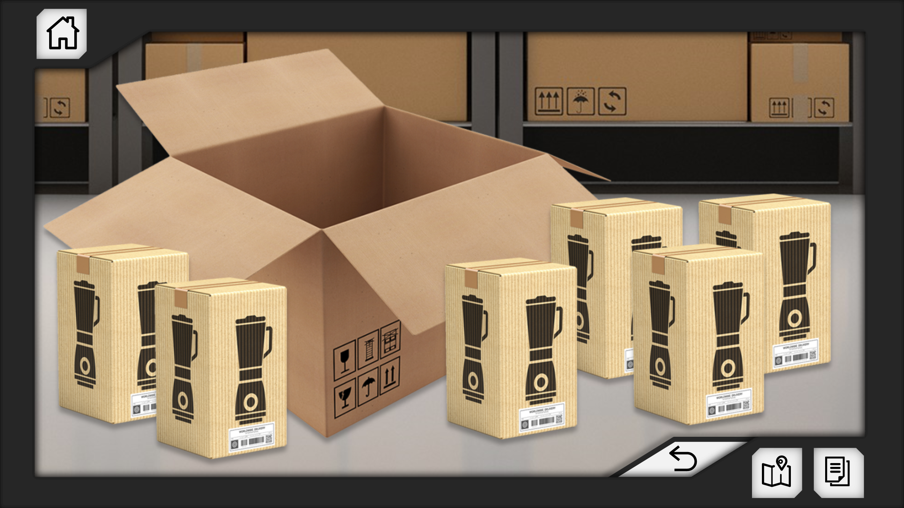
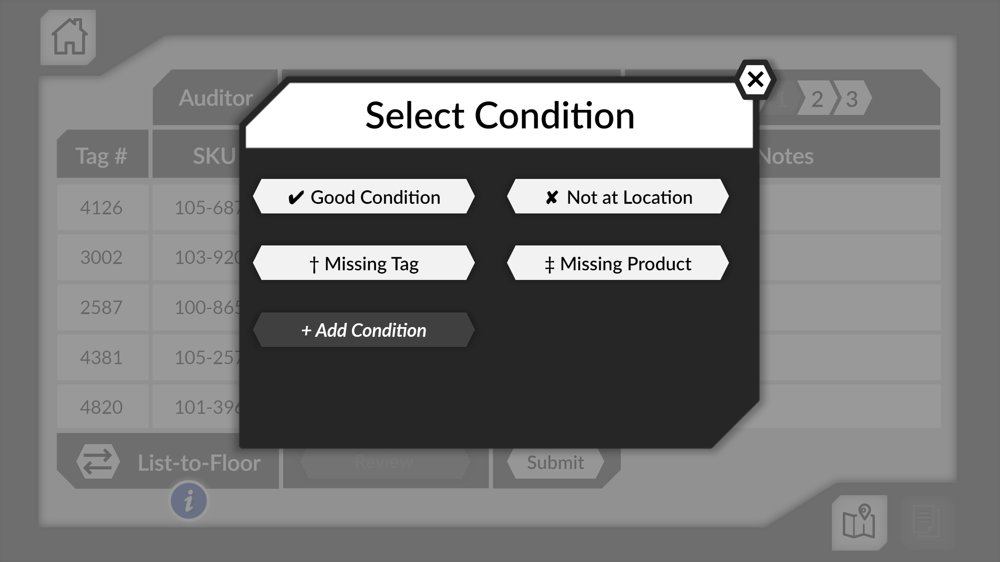
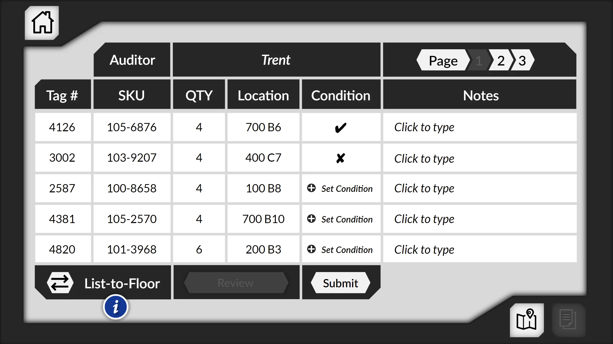

Need
Create an accessible alternative to a virtual-reality inventory audit without reducing the experience to a passive accommodation.

At a glance
Create an accessible alternative to a virtual-reality inventory audit without reducing the experience to a passive accommodation.
A fictional warehouse where junior auditors review client information, sample inventory, question employees, complete workpapers, and make recommendations.
The finished simulation supports JAWS and NVDA and includes 240 boxes, two difficulty modes, two audit approaches, and an explorable narrative environment.
It reinforced my belief that accessibility can be a catalyst for a richer experience—not merely a reduced substitute for the original design.
Methods & tools: Articulate Storyline · JAWS · NVDA · Simulation and narrative design
The simulation includes 240 boxes, Basic and Advanced modes, list-to-floor and floor-to-list approaches, explorable warehouse areas, and interactive employee dialogue.
Designed from the beginning for compatibility with JAWS and NVDA screen readers—not retrofitted after the experience was complete.
Scroll or swipe to explore more →







